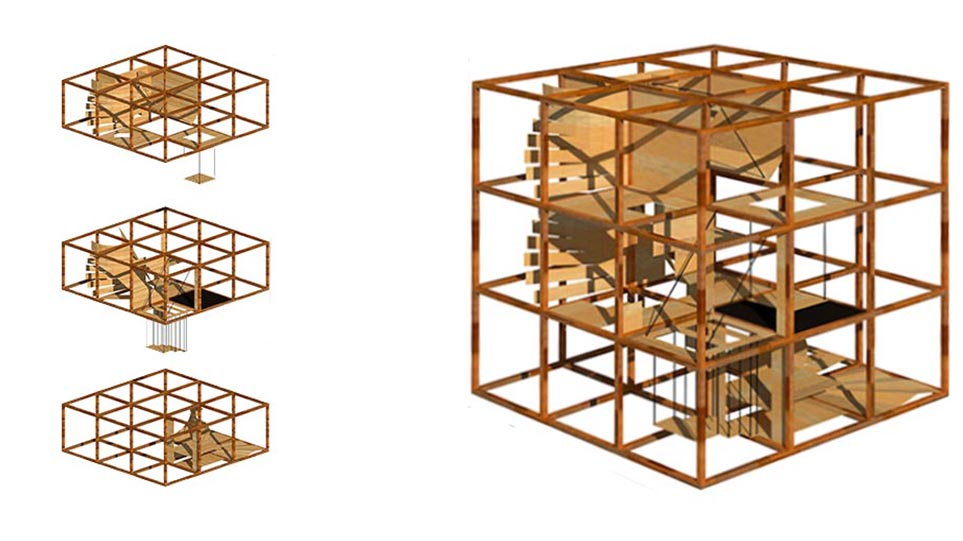
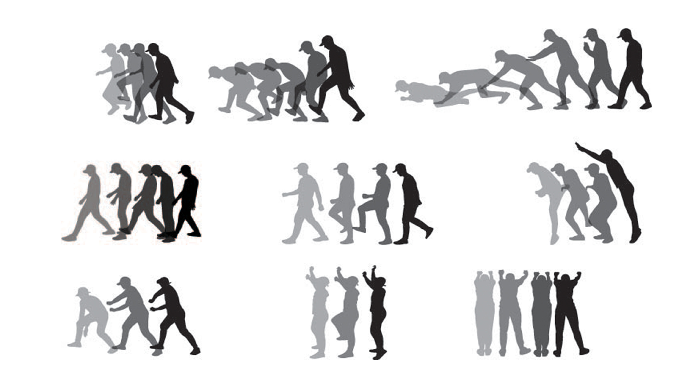
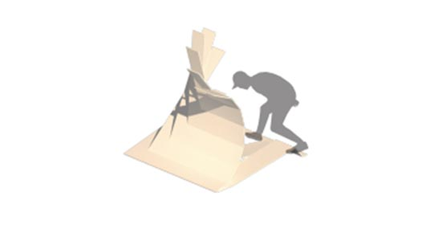
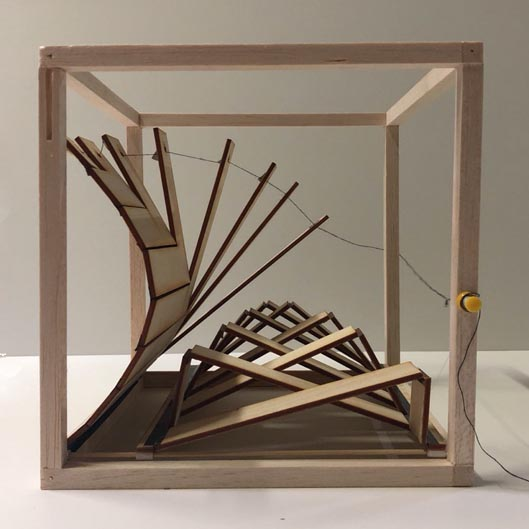
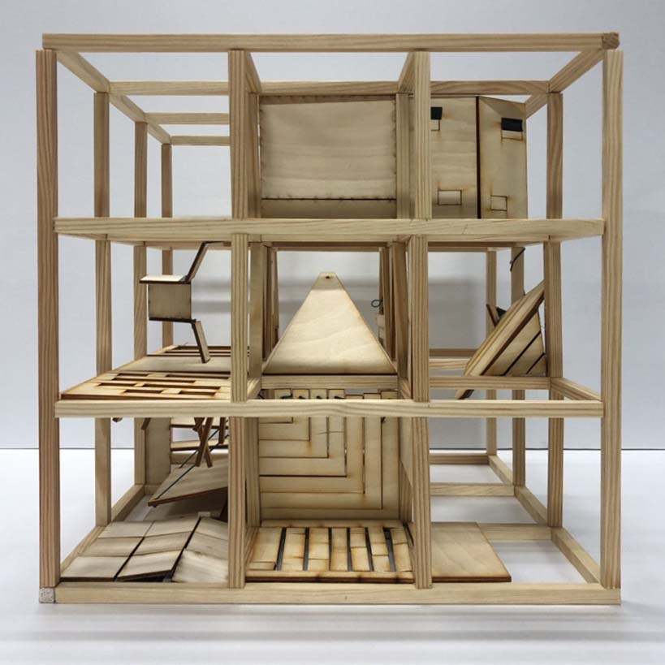
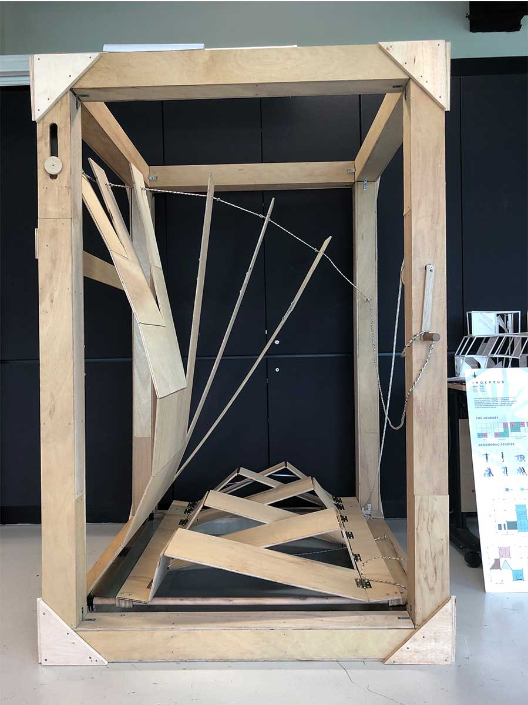
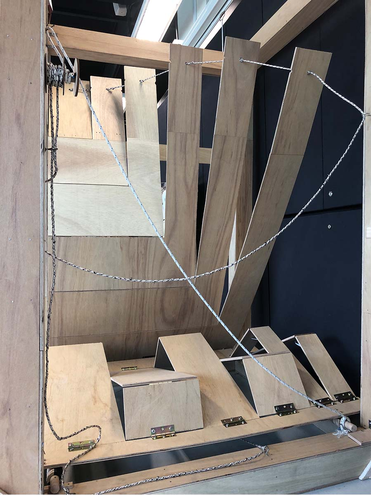
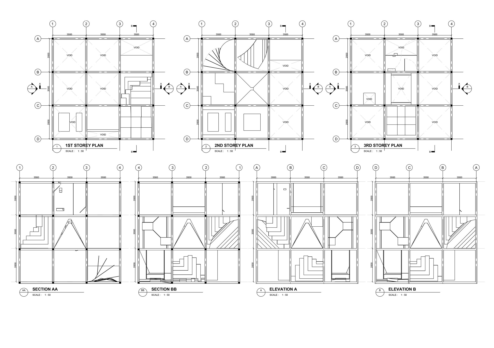
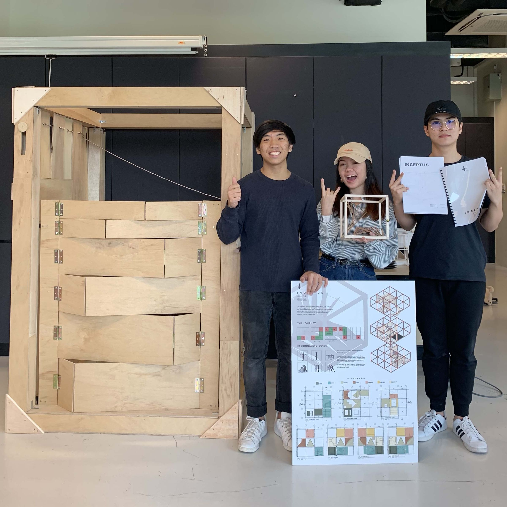

Project Inceptus
Brief
To extract scenes from the movie "Inception" to translate into a multi-dimensional space that transforms to suit the user's needs and habits.
Design Intent
To create a set of elements that mimic Arthur's experience throughout the film by designing a space that allows Arthur's actions and thought process to be translated into an interactive space that transforms from various two-dimensional planes.

Axonometric render
Scene Analysis
Six key scenes from the film were analysed to extract spatial qualities: uncertainty through suspended wobbling steps, abrupt shifts as walls fall suddenly, constraint and danger through undulating terrain with closing walls, balance via slanted walls representing shifting gravity, floating through zero-gravity navigation, and free fall stopped by a suspended plane.

Scene analysis — extracting spatial qualities from the film

Chosen scene — the driving scene, emphasising constraint and danger
Prototype
The chosen scene was translated into a physical prototype, exploring how gradually decreasing step sizes create a sense of compression and unease. Multiple iterations in paper and PVC were tested to refine the spatial experience.

PVC prototype

1:10 scale model
Final Model

Final model

Final model — detail

Plan and elevation/section drawings

Exhibition